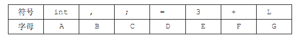

第一行包含一个整数 Q表示此数据中一共包含 Q个询问。
接下来 2Q行，每两行为一个询问。
每个询问中的第一行包含一个字符串 S，表示完整代码，第二行包含一个字符串
T，表示需要检测出现次数的代码片段。
考虑到如下的两段代码，很容易发现他们其实是一样的。
代码1
int i, j;
i = 3;
j = i + 1;
代码2
int a, i;
a = 3;
i = a + 1;
这是因为这两段代码之间唯一的差异，只是他们更换了一下变量名，比如第
一段代码中的i变成了第二段的a，第一段的j变成了第二段的i。而其他的常量，
例如3，1或者其他的关键字和运算符，比如 int，+和；。都是没有发生变化的。
不过注意到如下的代码片段，我们并不能简单认为这是一样的，因为这不是
一个简单的替换，而是可以导致不同运算结果的。
代码3
a = 3;
b = 3;
代码4
c = 3;
c = 3;
为了简化问题，我们用大写字母来表示所有的关键字、常量等非变量符合。
假如我们采用如下的替换表

那么最开始给出的两段雷同代码就可以分别写成 AiBjCiDECjDiFGC 以及
AaBiCaDECiDaFGC。或者简单的说，我们认为这两段代码是一样的。
现在请写一个程序，处理若干这样的代码雷同检测问题：给一个完整代码以
及一个较短的代码片段，请求出，这个代码片段在完整代码中一共出现了多少次
（代码片段出现的位置可以重叠）。
为了简单起见，我们认为程序中只会至多出现 a~z 这 26 个变量，同时也至
多只有A~Z这26个非变量符号。
第一行包含一个整数 Q表示此数据中一共包含 Q个询问。
接下来 2Q行，每两行为一个询问。
每个询问中的第一行包含一个字符串 S，表示完整代码，第二行包含一个字符串
T，表示需要检测出现次数的代码片段。
一共输出 Q行，每行一个整数，表示对应代码片段的出现次数。
3
AiBjCiDECjDiFGC
AaBiCaDECiDaFGC
cDEcDEbDE
aDEbDE
ccddef
aab
1
1
2
【样例说明】
前两个样例均为题目中所举例的代码段。第三个样例中，在完整代码 S中与
代码片段T 一样的片段为：ccd和ddeQ<=3,|T|<=100000,|S|<=1000000